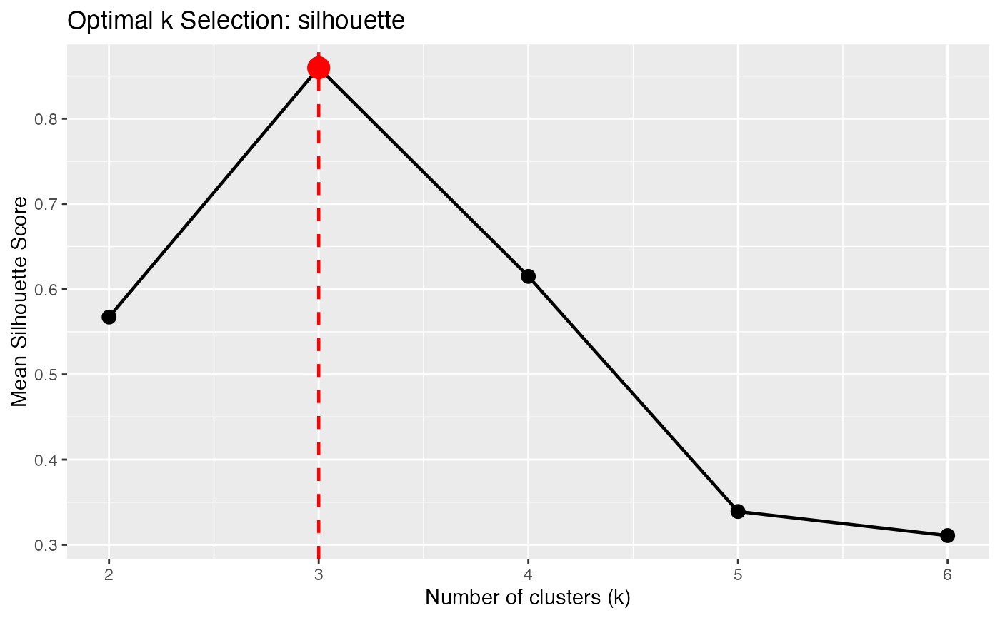

Determines the optimal number of clusters for functional k-means clustering using various criteria: elbow method, silhouette score, or Calinski-Harabasz index.
Usage
cluster.optim(
fdataobj,
ncl.range = 2:10,
criterion = c("silhouette", "CH", "elbow"),
metric = "L2",
max.iter = 100,
nstart = 10,
seed = NULL,
...
)Arguments
- fdataobj
An object of class 'fdata'.
- ncl.range
Range of number of clusters to evaluate. Default is 2:10.
- criterion
Criterion to use for selecting optimal k:
- "silhouette"
Mean silhouette coefficient (default). Higher is better.
- "CH"
Calinski-Harabasz index. Higher is better.
- "elbow"
Within-cluster sum of squares. Look for elbow in plot.
- metric
Either a string ("L2", "L1", "Linf") or a metric function.
- max.iter
Maximum iterations for k-means (default 100).
- nstart
Number of random starts (default 10).
- seed
Random seed for reproducibility.
- ...
Additional arguments passed to cluster.kmeans.
Value
A list of class 'cluster.optim' with components:
- optimal.k
Optimal number of clusters based on criterion
- criterion
Name of criterion used
- scores
Vector of criterion values for each k
- ncl.range
Range of k values tested
- models
List of cluster.kmeans objects for each k
- best.model
The cluster.kmeans object for optimal k
Details
Silhouette score: Measures how similar each curve is to its own cluster compared to other clusters. Values range from -1 to 1, with higher being better. Optimal k maximizes the mean silhouette.
Calinski-Harabasz index: Ratio of between-cluster to within-cluster dispersion. Higher values indicate better defined clusters. Optimal k maximizes CH.
Elbow method: Plots total within-cluster sum of squares vs k. The optimal
k is at the "elbow" where adding more clusters doesn't significantly reduce WSS.
This is subjective and best assessed visually using plot().
Examples
# Create functional data with 3 groups
set.seed(42)
t <- seq(0, 1, length.out = 50)
n <- 60
X <- matrix(0, n, 50)
true_k <- rep(1:3, each = 20)
for (i in 1:n) {
if (true_k[i] == 1) {
X[i, ] <- sin(2*pi*t) + rnorm(50, sd = 0.1)
} else if (true_k[i] == 2) {
X[i, ] <- cos(2*pi*t) + rnorm(50, sd = 0.1)
} else {
X[i, ] <- sin(4*pi*t) + rnorm(50, sd = 0.1)
}
}
fd <- fdata(X, argvals = t)
# Find optimal k using silhouette
opt <- cluster.optim(fd, ncl.range = 2:6, criterion = "silhouette")
print(opt)
#> Optimal K-Means Clustering
#> ==========================
#> Criterion: silhouette
#> K range tested: 2 - 6
#> Optimal k: 3
#>
#> Scores by k:
#> k score
#> 2 0.5673
#> 3 0.8597
#> 4 0.5862
#> 5 0.3401
#> 6 0.3093
plot(opt)
